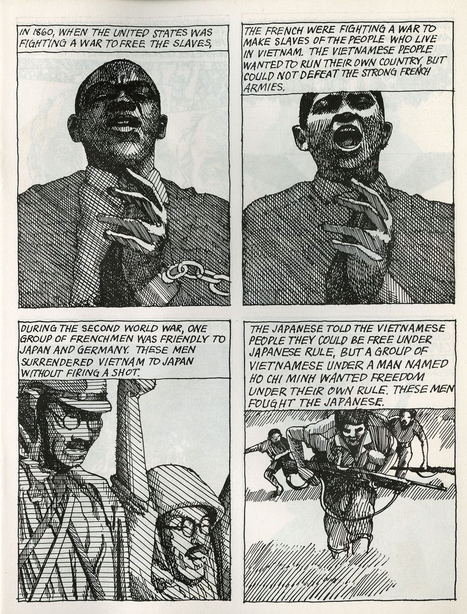

How it works: read the comic pages → answer the question about today's big idea → see what the comic got right and wrong → write 1–2 sentences or answer a second check. Done = all parts green, then turn in at the bottom.
Content note: This comic was made in 1967 to argue against the Vietnam War. It is one-sided on purpose. Page 1 shows a man in chains, and page 5 shows a prisoner who is tied up and blindfolded. One panel on page 5 is covered because it prints a racist slur. A note tells you what it said.
Word help (tap to open)
- Colony = a land ruled by another country far away
- Independence = when a country rules itself
- Communist = wants one party to run the country and own the farms and factories
- Ally = a country on your side
- 17th parallel = a line on the map where Vietnam was split
- Ho Chi Minh (say "hoe chee min")
- Diem (say "zee-em")

Click the page to make it bigger.
Turn in your work
Your work saves on this device, so you can come back later. Your teacher sees it after you turn it in.
Comic: Vietnam (1967), written by Julian Bond, art by T.G. Lewis. An anti-war comic made for Black American readers. Scan: Internet Archive. Reader pages are the comic's pages 7–12. One panel on comic page 11 was covered for class because it prints a racist slur; the rest of the art is unchanged. Shown as a historical source for classroom study.